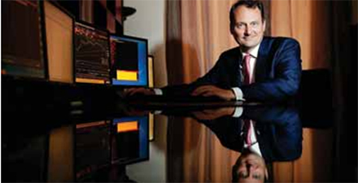

Bourse
Krach boursier : comment faire face ?
Sébastien Hénin : « Jouer les produits dérivés pour protéger sonportefeuille. » PHOTO GUILLAUME BONNAUD/«SUD OUEST »
Finances - Un spécialiste avance quelques solutions pour sortir de la crise sans trop de dégâts
La pandémie de Covid-19 a provoqué un véritable effondrement boursier. À quelques jours du déconfinement, Sébastien Hénin, directeur de la gestion privée chez Aliénor Capital, société bordelaise de gestion de portefeuille, analyse la conjoncture et émet quelques conseils pour protéger ses avoirs dans la tourmente actuelle.
"Sud Ouest" Les marchés financiers ont perdu 6 000 milliards de dollars depuis février. Comment expliquer un effondrement aussi brutal ?
Sébastien Hénin Il faut rappeler que nous étions déjà dans un contexte de ralentissement économique mondial avec notamment une récession manufacturière en 2019. Par ailleurs, un grand nombre d'actions de sociétés de type " growth " (en croissance) ont vu leur cours de Bourse décupler au cours de la décennie écoulée. Tôt ou tard, les marchés devaient corriger ces valorisations excessives et fragiles. La guerre commerciale entre les États-Unis et la Chine, et la dégringolade des cours du pétrole liée notamment aux désaccords entre l'Arabie Saoudite et la Russie ont également contribué au développement d'un climat anxiogène dans le monde des affaires. Et la croissance du nombre d'entreprises très endettées présentant un risque sérieux d'insolvabilité à terme n'a rien arrangé. La crise sanitaire est donc venue se greffer sur une conjoncture passablement déprimée, provoquant un état de sidération des investisseurs. Ces derniers n'ont pas hésité à liquider leurs positions.
Quel peut-être le scénario de sortie de crise ?
Il est encore trop tôt pour l'ébaucher. Nous sommes pour l'instant dans une phase d'agitation au cours de laquelle les marchés cherchent leur point bas. Je pense qu'on y verra un peu plus clair lorsque le déconfinement sera bien engagé. La vigueur de la reprise dépendra de la capacité des entreprises à réactiver leurs lignes de production. Il y a aussi une dimension psychologique : les consommateurs seront-ils au rendez-vous ? Dans tous les cas, le rebond n'est pas attendu avant le second semestre 2020.